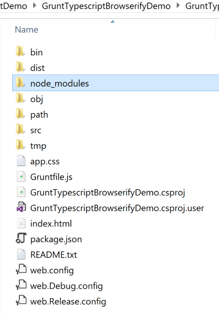
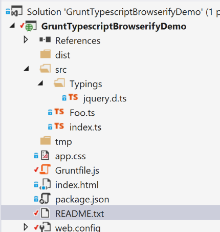
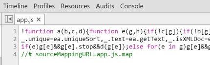

Any developer worth their salt will of course be playing around with Visual Studio 2015, and those of us that are interested in web development would be of course trying out the new ASP vNext capabilities.
One thing that hit me straight away was that Microsoft have indeed stuck by their promises to embrace more "open source" works with ASP vNext. As such any new ASP vNext you do you will likely have to learn these things
NPM and Bower are extremely easy to work with, so you should not fear them. As for NuGet, well if you are a .NET developer you have more than likely used NuGet before, nothing new there.
Me personally I had used Node and NPM before, I had not used Bower, but was comfortable with that within a day. As for Gulp / Grunt, I had obviously heard of these tools but had not used them. I looked at both and actually preferred the syntax of Grunt over Gulp.
One thing that Gulp claims to have done better is to stream files, such that they can be done asynchronously. That said I just felt more at home working with Grunt, so I decided to use that. One thing of note is that with ASP vNext you may use either Grunt or Gulp.
So decided to learn about Grunt, and just thought I would share my findings here with any of you that may be in the same ship as me (ie a beginner with a JavaScript task runner).
The best place to get started with Grunt, is by actually going to the Grunt web site, where they are many useful guidelines to get you started. However the following sections should hopefully at least get you a little more familiar with Grunt, and by reading this and the Grunt resources at the Grunt web site you should be able to get up and running with Grunt pretty easily.
As usual you can grab the code from github account : https://github.com/sachabarber/SmallGruntDemo
You should ensure that you do this before you carry on with the rest of the article
Installing Grunt
In order to install Grunt there are a couple of things you MUST do. These are outlined below.
As I have already state Grunt is a task runner. It is written in JavaScript and has a configuration file (gruntfile.js) that details the tasks that need to be run. It is a bit like MSBuild / NANT in the fact that there is a default task.
Tasks can also call other tasks. Grunt also relies on NPM to install certain Grunt plugins.
Huh, what is a Grunt plugin? Well a Grunt plugin, is simple a prebuilt Grunt task that has either been authored by the Grunt team or the Grunt community.
The official Grunt team plugins all follow the naming conventions of "grunt-contrib-XXXXXX". That way you can tell the "Official" packages from the non official packages.
These Grunt plugins (that are actually installed by using NPM) need to get loaded into the Grunt context. This is done using the following sort of line:
grunt.loadNpmTasks('grunt-contrib-clean');
Once a plugin is loaded it may be used by Grunt. Here is an example of how to use the loaded Grunt plugin, where it can be seen that the plugin has a name, and is a JSON object. Each plugin has its own API, so you will need to check the API documenation for the Grunt plugin you choose to use.
// Cleans directories
clean: {
dist: [
'dist/**/*'
],
tmp: [
'tmp/**/*'
]
},
Ok so now on to what the demo app does. The demo app is a very simple VS2013 solution that does the following things:
prod" task) to a single output file
You need to carry out these steps if you want to work with the demo code.
As is the case with NuGet where you would not submit the packages themselves
to the source control repository (github for example). So it is with NPM, you
would check in a configuration file (package.json) that tell NPM
what packages are needed. You should now ensure you do this:
From Node.js command line, Change to directory which has package.json in it,
and run the following command line
"npm install". This will
fetch all the packages (from the internet, so make sure you have a connection)
using the information contained within your package.json file. You
should end up with something like this, where the "node_modules"
directory will contain all the downloaded packages.

The project structure that we are using for this small demo app looks like this

It can also be seen that this is where the NPM package.json and Grunt
gruntfile.js files live.
Here is the complete demo app Grunt
gruntfile.js file.
module.exports = function (grunt) {
'use strict';
grunt.loadNpmTasks('grunt-contrib-clean');
grunt.loadNpmTasks('grunt-ts');
grunt.loadNpmTasks('grunt-browserify');
grunt.loadNpmTasks('grunt-contrib-watch');
grunt.loadNpmTasks('grunt-contrib-uglify');
//INSTRUCTIONS
//1. Install Node.js
//2. From Node.js command line run this command "npm install -g grunt"
//3. From Node.js command line run this command "npm install -g grunt-cli"
//3. From Node.js command line, Change to directory which has package.json in it,
// and run the following command lines
// a) "npm install"
// b) "grunt watch"
grunt.initConfig({
pkg: grunt.file.readJSON('package.json'),
// Cleans directories
clean: {
dist: [
'dist/**/*'
],
tmp: [
'tmp/**/*'
]
},
// Typescript transpiler (Typescript to JS)
ts: {
options: {
fast: 'never',
target: 'es5',
module: 'commonjs',
sourceMap: true
},
index: {
src: ['./src/**/*.ts'],
outDir: './tmp'
}
},
// Package
browserify: {
'./dist/app.js': ['./tmp/*.js', './src/Jquery/jquery.js']
},
// Minify
uglify: {
my_target: {
options: {
sourceMap: 'dist/<%= pkg.name %/>.map',
sourceMapRoot: '..',
sourceMappingURL: '/<%= pkg.name %/>.map'
},
files: {
'./dist/app.js': ['./dist/app.js']
}
}
},
// Watch
watch: {
scripts: {
files: ['./src/**/*.ts'],
tasks: ['dev'],
options: {
event: ['all'],
}
}
}
});
// setup default task to run dev task
grunt.registerTask('default', ['dev']);
// +++++++++++++++++++++++++++++++++++++++++++
// Prod task
// +++++++++++++++++++++++++++++++++++++++++++
// 1. Cleans directories
// 2. Runs typescript transpiling task
// 3. Package using Browserify
// 4. Minify using Uglify
grunt.registerTask('prod', [
'clean',
'ts:index',
'browserify',
'uglify'
]);
// +++++++++++++++++++++++++++++++++++++++++++
// Dev task
// +++++++++++++++++++++++++++++++++++++++++++
// 1. Cleans directories
// 2. Runs typescript transpiling task
// 3. Package using Browserify
grunt.registerTask('dev', [
'clean',
'ts:index',
'browserify'
]);
};
As you can see the gruntfile.js is made up of a number of
tasks, each with its own section. We will look at each of these in turn below.
This section will dive into each of the demo apps Grunt tasks in more detail.
The "default" task is what would be called if you ran the "grunt"
command line from the directory that contains the gruntfile.js
file. It simply runs the following other tasks in order
We will talk more about these tasks later
The "dev" task is what would be called if you ran the "grunt
dev" command line from the directory that contains the
gruntfile.js file. It is intended to be run when you are developing
an app, as such no minification of the code is performed. It simply runs the
following other tasks in order
We will talk more about these tasks later
The "dev" task is what would be called if you ran the "grunt
prod" command line from the directory that contains the
gruntfile.js file. It is intended to be run when you are about to
deploy an app, as such minification of the code IS performed.
It simply runs the following other tasks in order
We will talk more about these tasks later
The "watch" task makes use of the following NPM package, and its sole job is to monitor a set of input files for changes, and then run x-many other tasks.
In order to initiate this watching of the files you MUST issue the following Grunt
command line "grunt watch". Here is the relevant section of
the Grunt
gruntfile.js
module.exports = function (grunt) {
'use strict';
grunt.loadNpmTasks('grunt-contrib-watch');
grunt.initConfig({
pkg: grunt.file.readJSON('package.json'),
// Watch
watch: {
scripts: {
files: ['./src/**/*.ts'],
tasks: ['dev'],
options: {
event: ['all'],
},
},
},
});
};
It can seen that this task monitors the files in the src folder and will run the "dev" task when any event (such as add, change, delete, rename) of these files occur.
The "clean" task makes use of the following NPM package, and its sole job is to clean directories
Here is the relevant section of the Grunt
gruntfile.js
module.exports = function (grunt) {
'use strict';
grunt.loadNpmTasks('grunt-contrib-clean');
grunt.initConfig({
pkg: grunt.file.readJSON('package.json'),
// Cleans directories
clean: {
dist: [
'dist/**/*'
],
tmp: [
'tmp/**/*'
]
},
});
};
It can seen that this task cleans a set of files contained with the targets specified by the JSON objects properties. Like I said EVERY Grunt task will be different, so you MUST consult the Grunt tasks API docs.
The "uglify" task makes use of the following NPM package, and its sole job is to minify the source file(s) and produce a single minified output file
Here is the relevant section of the Grunt
gruntfile.js
module.exports = function (grunt) {
'use strict';
grunt.loadNpmTasks('grunt-contrib-uglify');
grunt.initConfig({
pkg: grunt.file.readJSON('package.json'),
// Minify
uglify: {
my_target: {
options: {
sourceMap: 'dist/<%= pkg.name %>.map',
sourceMapRoot: '..',
sourceMappingURL: '<%= pkg.name %>.map'
},
files: {
'./dist/app.js': ['./dist/app.js']
}
}
},
});
}
The <%= pkg.name %> will be replaced by the name of the current
file. So app in this case.
Here is what the resulting app.js file looks like when it is finished being outputted by the "uglify" task. See how it is also minified.

Anyway that is all I wanted to say this time. As always if you liked what you saw, you can always leave a vote/comment they are always appreciated